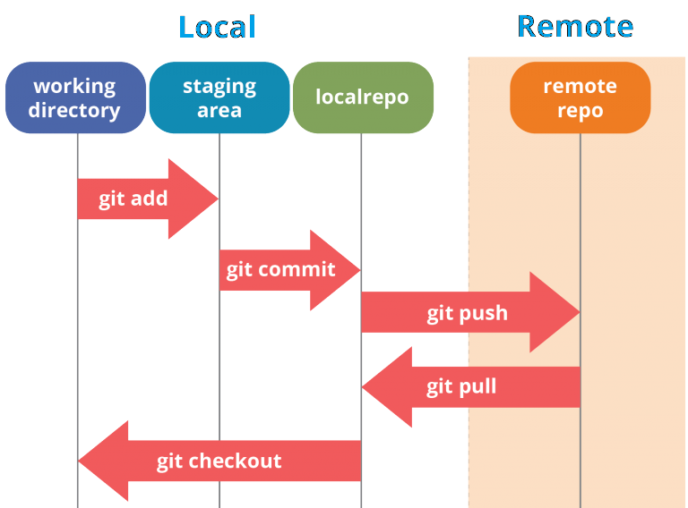
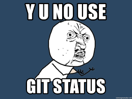

GIT 101

Characteristics
Strong support for non-linear development
Distributed development

Concept of History
NOTE: It is possible to rewrite the history
WORKING DIRECTORY
- The local folder where the files are located.
- Files - Untracked / Tracked (Staged, Commited , Modified)
- Where local HEAD is pointing

STAGING AREA
- Preparation stage.
- The files that are on the stage are the ones that go into the commit.
- Each commit moves the HEAD pointer a step on the local repo
REMOTE
- The place where the code is stored
- URL can be a repo, a repo from a fork or another server
- Remote URL represented by a name ( default : ORIGIN )
HEAD
- Locally only one HEAD - Where we are currently working
- Every remote branch has its own HEAD - latest change
- DETACHED HEAD states. No branch association


COMMANDS

git config
# configuring a user.name
git config --global | --local | --repo user.name="Name"
# getting the list of configurations
git config --list
# creating a git alias
git config --global alias.up "!git remote update; git merge --ff-only @{u}"

git status
git status --short | --long ( default )

git show
# show information about a specific commit - changes / author / date / etc
git show "commit"
# most options are relative to type of information to be shown
# short | medium | full | fuller | email
git log
# check for the just a specific type of commits
git log --no-merges | --merges
# check for commit related to a user
git log --author="(author)"
# multiple options to see the history of revisions
# also graphical with git log --graph
Shows the story of the local branch repository


git blame "file"
-l ( long revision )
# find the commiter between lines 0 and 10 of the filename
git blame filename -L 0,10
# for debug purposes
# An easy way to find who wrote the code
# or
# which commit is associated its logic
# or
# tracking changes

git diff
# compare changes from local repo with untracked changes
git diff
# compare changes from local repo with staged changes
git diff --cached
# compare changes with commit that commited 3 revisions before
git diff HEAD~3
# compare changes with the commit with a specific hash
git diff (commitHASH)
--dst-prefix='prefix' # rename destination commit
--src-prefix='prefix' # rename source commit

git branch
git branch 'branch-name' #create a branch
git branch # all local branches
git branch -a # Check all the branches
git branch -r # Check existing remote branches
git branch -d # deletes a branch
# delete w/ force a branch with existing changes to be commited/ merged
git branch -D branch
git branch --contains 'commit' # check which branch contains a commit
git checkout
# checkout to a existing branch
git checkout branch
# checkout to a branch and create if it does not exist
git checkout -b new-branch
# Note: the following command deletes all untracked changes
git checkout .

git add "file(s)"
# add all files that are on the root of the current directory
git add .
# add all files
git add -a
#add updated files
git add -u
# you can use regex to add specific files

git commit
# create a commit with all modified and updated files from the repo
git commit -a
# add a message to the commit MESSAGE IS REQUIRED
git commit -m "message"
-m can be omitted -> git will open VSCode / Vim or chosen text editor
git commit -p # commit interactive
git commit -u # untracked-files
# when finished it creates a new revision/commit into the local repo
git push #the normal usage
CAREFUL WITH UPSTREAM
git branch --set-upstream-to="origin/'branch-name'"
DELETING A REMOTE BRANCH
git push --delete origin 'branch-name'

BEWARE OF 'GIT PUSH -F'
- DELETES HISTORY OF THE REPOSITORY
- REWRITES THE HISTORY OF THE REPOSITORY BASED ON THAT BRANCH


git pull
## git pull = git fetch origin + git merge
# fetchs the info for the origin repos
# changes your local branch where your HEAD points too automatically
# when you run this command
# will auto merge for you if it can
git fetch
# fetchs the information from the origin or all repos
git fetch 'repo' | git fetch --all
git fetch origin 'branch' # fetch a single branch
IT DOES NOT UPDATE LOCAL BRANCHES AUTO


git merge
# The Little Monster or the Cool Guy
git merge 'branch' --ff-only
git merge --abort ( usage when there are conflicts )
Merge strategies
- Explicit, non fast-forward merge
- Implicit via rebase or fast-forward merge
- Squash on merge
Some extra info about this matter link

- Explicit merges are good for tracking.
- recursive-3 way merge strategy, changable

- replays commits on the target branch
- rewriting history by changing the sha-1 ids

git config --global merge.ff only
git merge --ff-only
# aborts in case of commits being on target dev.
# lose some context as part of an earlier branch

Transforms all the commits in a single one "centralized"
Feature branch stays if you need to track the changes that existed
git reset
# staged to unstaged
git reset
NOTE: Unstaged Changes will dissapear
# staged/unstaged to latest existing commit
git reset --hard
# staged/unstaged to specific commit hash
git reset 'hashCode'


git stash
# add to the stash
git stash push
# apply to unstaged and keep it on the stash
git stash apply
# apply to unstaged and remove from the stash
git stash pop
# remove without adding to the changes
git stash drop
# show all items on the stash
git stash list

git cherry-pick 'commit(s)'
# copys specific commits to be added into the local HEAD
# may cause conflicts
# if you have multiple commit to be picked and changes need to be applied
git cherry-pick --continue
--skip
--abort
--quit

git rebase
THIS CAN REWRITES HISTORY
git rebase -i ( DEMO )
git revert
# when you need to rollback on commits due to a broken commit
# revert the changes specific by the fourth last commit in HEAD
# and creates a new commit
git revert HEAD~3
git revert --continue
--skip
--quit
--abort
git remote
# mostly about the remote repo config
# add user repos in here if you want to share information.
git remote -v
# delete stale references branches
git prune == git fetch --prune
# update remote references
git remote -p / update == git fetch --all
git tag
# shows existing tags in repo
git tag
# show tags by wildcard
git tag -l 'v.1.0.0*'
# adds a tag to the HEAD commit
git tag -a v1.0 -m "version 1.0"
# or lightweight version
git tag v1.0-lw
# other commands
# kinda of a changelog
git whatchanged
# when you need to find lost work / Manage reflog information
git reflog
# git repository browser
gitk
# patches a file or index
git apply
Create a company policy of work
some sugestions:
- Multiple branches
- Single branch master - with PR
- Single history - with rebase
Proper commit messages
Summarize changes in around 50 characters or less
More detailed explanatory text, if necessary. Wrap it to about 72 characters or so. In some contexts, the first line is
treated as the subject of the commit and the rest of the text as the body. The blank line separating the summary from the
body is critical (unless you omit the body entirely); various tools like `log`, `shortlog` and `rebase` can get confused
if you run the two together.
Explain the problem that this commit is solving. Focus on why you are making this change as opposed to how (the code explains that).
Are there side effects or other unintuitive consequences of this change? Here's the place to explain them.
Further paragraphs come after blank lines.
- Bullet points are okay, too
- Typically a hyphen or asterisk is used for the bullet, preceded by a single space,
with blank lines in between, but conventions vary here.
If you use an issue tracker, put references to them at the bottom, like this:
Resolves: #123
See also: #456, #789
Do not commit generated files
Do not commit large binaries


QA / DEMO